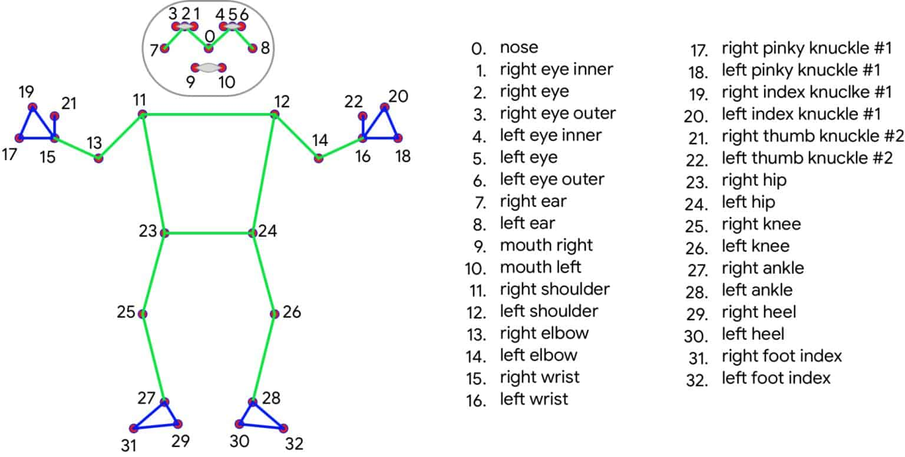
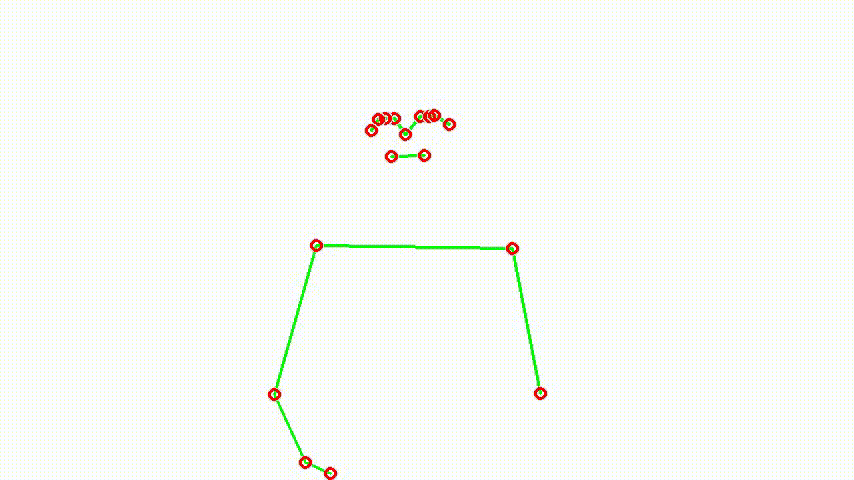
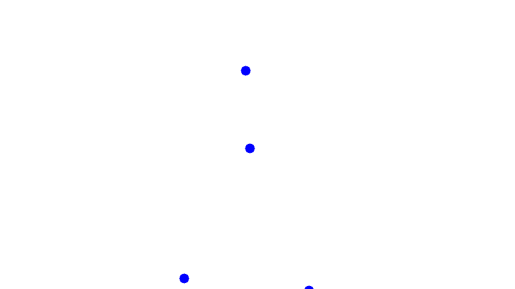
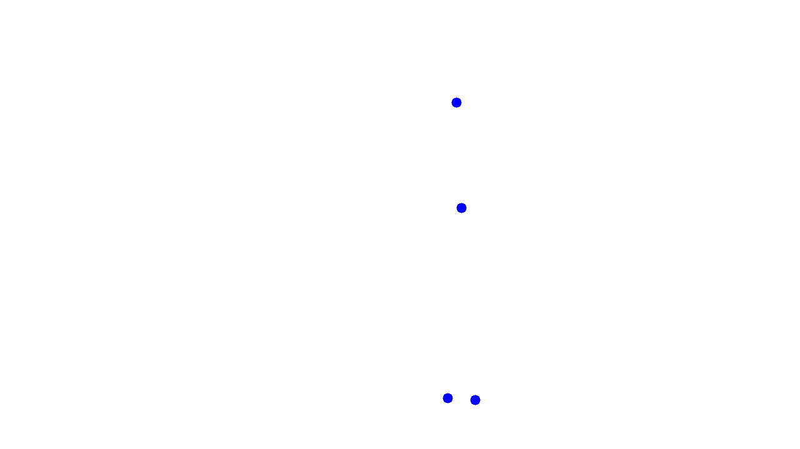
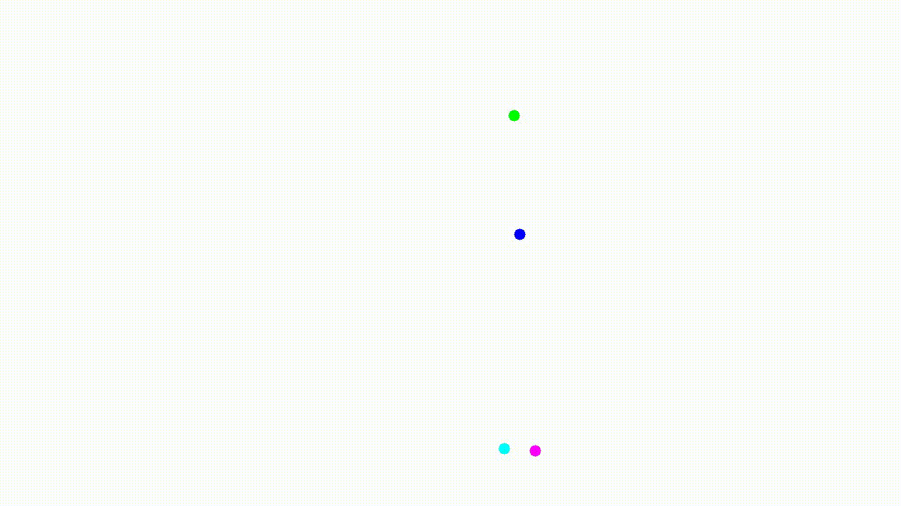
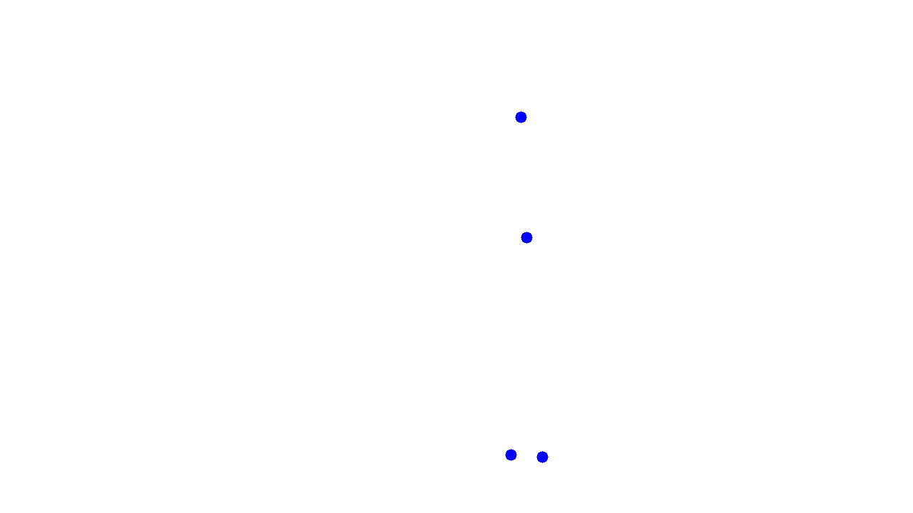
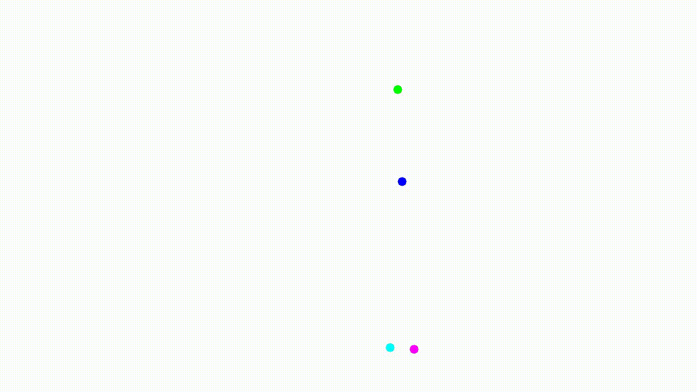
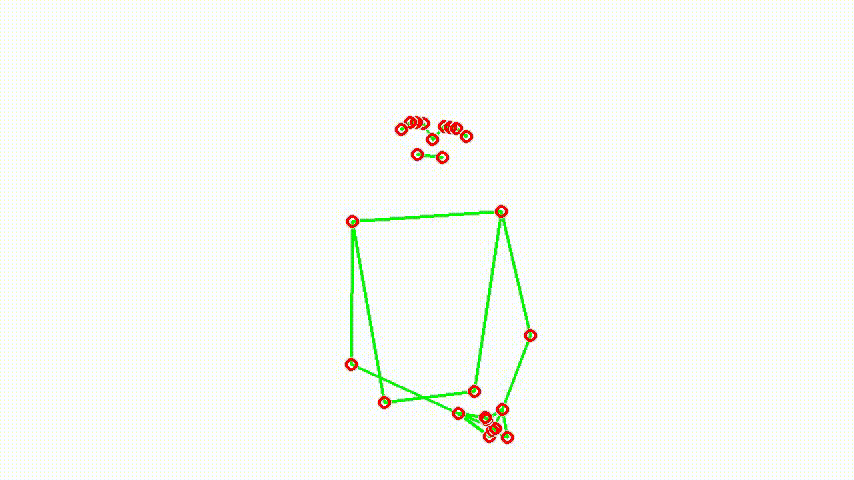
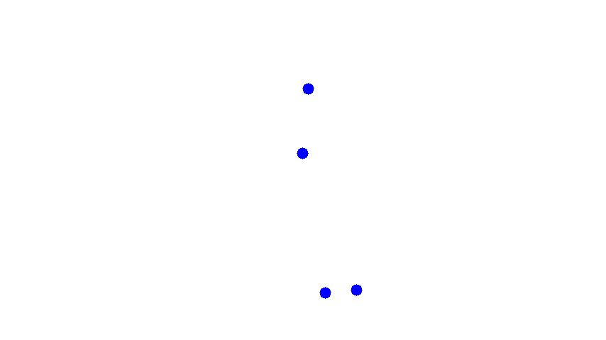

Effective emotional expression is a fundamental component of human communication, and it exhibits intriguing variations among individuals with different hearing abilities. Cultural, cognitive, physiological factors, as well as individual differences like hearing abilities, contribute to these variations. Exploring the differences in emotional expression across individuals with diverse hearing abilities can offer valuable insights into the intricate dynamics between communication and hearing.
In this study, we aim to compare emotional expression across three distinct groups: hearing individuals, deaf individuals, and CODA (Children of Deaf Adults) individuals. Hearing individuals rely primarily on speech, while deaf individuals primarily use sign language for communication. CODA individuals, on the other hand, have been exposed to both speech and signing from early childhood due to their deaf parents, resulting in unique language and communication experiences.
MediaPipe Pose is an advanced framework developed by Google that employs deep learning techniques to accurately estimate human body poses. With 33 3D landmarks, it provides a high-fidelity representation of body movements.
For our study, we focused on four specific points of interest:
To gain insights into emotional expression during signing or speaking the angry sentence "You're wasting my time!" in Hebrew, we present three GIFs for each category. The first GIF shows the complete set of captured landmarks from MediaPipe Pose, along with the underlying skeleton. The second GIF focuses solely on our four points of interest, offering a closer examination. The third GIF presents the four landmarks in all frames of the video, providing a comprehensive view of their movements and patterns throughout the entire sequence.
Deaf:



Hearing:
 



CODA sign:


CODA speech:



We introduce a two-stage approach for video processing, designed to extract meaningful features from video frames. The first stage involves processing frame-wise information, while the second stage focuses on aggregating frame information to derive video-wise features.
We start by identifying four key landmarks in each frame: the left wrist, right wrist, mid eyes, and mid shoulders. From these landmarks, we extract a set of 18 features per frame. These features include the x, y, and z coordinates for each landmark, as well as the Euclidean speed. The Euclidean speed is calculated by measuring the distance between the current frame's coordinates and the coordinates of the previous frame. For the initial frames without a previous frame, the Euclidean speed is set to zero. Additionally, we measure the distance of the wrists from the body plane, which is defined using the mid shoulders, left hip, and right hip landmarks (landmarks 23 and 24 in MediaPipe Pose).
(18 FEATURES: for all landmarks - x, y, z coordinates and Euclidean speed ; only for the two wrists - distance from body plane.)
In the second stage, we aggregate the frame information to derive video-wise features. This process yields a total of 36 features. These features include the variance* of the x, y, and z coordinates across all frames, as well as the largest eigenvalue of the covariance matrix. The covariance matrix represents the relationship between variables (x, y, z) across frames. Computing the largest eigenvalue helps identify the principal component, which indicates the direction of maximum variance. Additionally, we calculate the mean and variance of the speed, the total distance covered by each landmark (sum of all Euclidean distances), and the volume of the 3D movement for each landmark (volume of the convex hull formed by the landmark points). For the wrists, we also compute the mean and variance of the distance from the body plane.
To determine the distinction between the 'Dominant' and 'Non-dominant' wrists, we identified the wrist with the larger volume as the 'Dominant' wrist. Thus, we replaced the labels 'Left' and 'Right' with 'Dominant' and 'Non-dominant' accordingly.
Eventually, we performed data normalization to achieve a standard deviation of 1 and a mean of zero.
* We use the variance instead of the mean because using the mean could introduce bias in the machine learning process. Subjects from different labels might have different mean values simply because of their positions relative to the camera. By using variance, we focus on the spread or dispersion of the data points around the reference point, which allows us to capture the relative differences more accurately and avoid potential biases introduced by positional variations.
(36 FEATURES: for all landmarks - variance of x, y, z coordiantes, largest eigenvalue, mean and variance of speed, volume of the convex hull, total distance covered ; only for the two wrists - mean and variance of distance from body)


In our process of feature normalization, the goal is to bring the features to a common reference point, known as the baseline. This baseline is represented by the "Neutral" label.
Normalization. For each subject, we calculate the average of all sentences' features corresponding to instances labeled as "Neutral." This average, obtained by considering the neutral instances as a whole, represents the characteristic features of the baseline. Next, we perform normalization on each sample of that subject by subtracting the computed average. This process aligns the subject's features with the neutral baseline, ensuring that variations are relative to the neutral reference point.
Scaling. After normalization, we proceed to scale each subject's sample by dividing it by the baseline average. This step allows standardized comparisons across subjects and makes the normalization process relative to the baseline. It represents the normalized features as proportions of their deviation from the average of the "Neutral" instances.
We utilize a random forest classifier comprised of 100 trees. In order to emulate a balanced dataset, we adjust the weights assigned to each class in inverse proportion to their frequencies in the input data. For each execution, we select a different subset of our categories, including hearing, deaf, CODA sign, and CODA speech, as our data. To assess the performance of our model, we employ an 80-20 random split for training and testing, and utilize a 5-fold technique to evaluate the results on the hold-out test set. This technique involves averaging accuracy over the 5 folds and summing the confusion matrix. Our classifier takes in 36 numeric features extracted from the video processing stage as input, with the target variable being the emotion (anger, sadness, happiness, or neutrality).

The confusion matrix is presented along with the accuracy metric and the four most significant features.


We utilize a random forest classifier comprised of 100 trees. In order to emulate a balanced dataset, we adjust the weights assigned to each class in inverse proportion to their frequencies in the input data. For each execution, we select a different subset of our emotions as our data. To assess the performance of our model, we employ an 80-20 random split for training and testing, and utilize a 5-fold technique to evaluate the results on the hold-out test set. This technique involves averaging accuracy over the 5 folds and summing the confusion matrix. Our classifier takes in 36 numeric features extracted from the video processing stage as input, with the target variable being the category (hearing, deaf, CODA sign, and CODA speech).